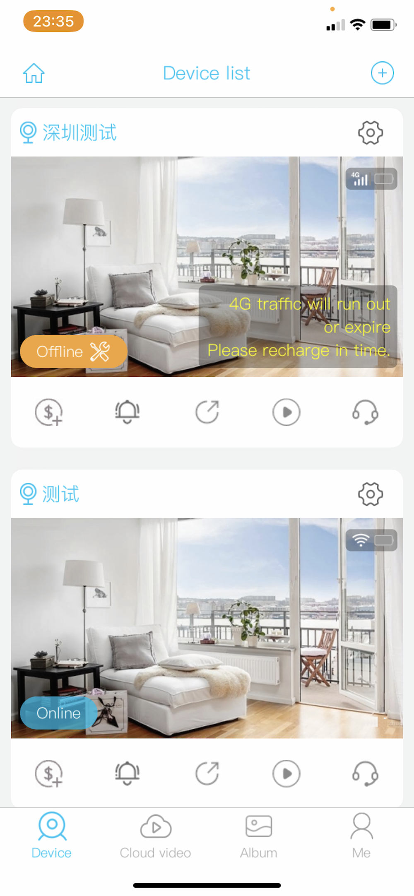

uboX 为什么不做全时录像？低功耗摄像头的架构取舍
从 PIR 被动红外触发、TF 卡循环覆盖到云端事件推送，拆解 uboX 如何在不做全时录像也不标配云存储的前提下，让电池款摄像头撑过数月续航，以及这套设计的边界在哪里
一个反常的问题
市面上大多数 WiFi 摄像头默认做两件事：全时录像 + 云存储。全时录像保险——任何时刻发生的事都不会漏；云存储省心——TF 卡满了、设备被拆走也不怕丢数据。但代价是续航极短（电池款撑不过一周）、流量巨大、年费订阅压力。
uboX官网 的思路反过来：默认只在事件触发时录像，云存储是可选增值服务。
这个取舍让它的电池款摄像头能够撑过数月续航（官方标称待机可达 6 个月），但也意味着用户必须理解它的"触发逻辑"才能用得好。我花了一段时间拆解这套系统的运作方式，发现它不是简单地"关掉了全时录像开关"——背后是一整套为低功耗目标设计的硬件-固件-云端协同架构。
核心触发：PIR 被动红外传感器
一切的起点是那颗 PIR 传感器。PIR（Passive Infrared，被动红外）不是摄像头，它不拍画面、不编码，只是感知"前方红外热量有没有突然变化"——简单说就是检测有没有东西在动。
这颗传感器的价值在于功耗极低。一个 WiFi 摄像头的主处理器在编码推流时可能吃几百毫安电流，而 PIR 传感器的待机电流通常只有几微安——差了五个数量级。所以 uboX 的待机策略是：主处理器几乎一直休眠，只有 PIR 检测到"可能有物体移动"时才把主处理器唤醒。
唤醒之后做什么？先拉一下摄像头的实时画面，跑一遍运动检测算法确认不是误触发（比如树影晃动、飞虫），确认是真的有人或车，才开始录像并推送事件。这个"PIR 粗筛 → 摄像头精判"的两阶段设计是低功耗摄像头的标准套路，但 uboX 在参数上调得比较激进——录像默认只录 8 秒，最长不超过 60 秒，就是为了把单次唤醒的功耗压到最低。这套触发逻辑的参数细节和固件版本差异，可以在 uboX文档 里查到。
存储层：TF 卡循环覆盖而非云端中转
事件触发的录像最终写到哪里？uboX 的选择是本地 TF 卡优先，云存储是可选增值。
这背后的原理很朴素：写入本地 TF 卡的功耗远低于推流到云端。一次事件录像如果走云端，涉及 WiFi 唤醒、DNS 解析、TLS 握手、上传编码后的视频流——每一步都耗电。本地 TF 卡写入只是一次 SPI 总线操作，几毫瓦就搞定。
但本地存储有一个经典问题：卡满了怎么办？uboX 用的是环形覆盖——和行车记录仪一模一样的策略：TF 卡录满后自动删除最早的文件腾出空间，新事件永远能存进去。官方明确标注最大支持 128G 的 FAT32 格式 TF 卡，Class 10 / U1 速度等级，就是为了保证环形写入时不丢帧、不卡顿。
环形覆盖的好处是用户永远不用手动清理存储卡；代价是录像有时间窗口——16G 卡在事件触发频率中等的情况下只能覆盖 7-14 天，64G 卡能覆盖 30-60 天。如果作案发生在窗口之外，录像已经被覆盖掉了。这就是为什么 uboX 把云存储做成可选——在意"录像留存时间"的用户可以付费延长窗口，在意续航和隐私的用户就用本地卡。

云端的角色：事件推送而非录像中转
很多人以为 uboX 摄像头的核心是那个 APP，其实反过来——摄像头才是主体，云端只是一个轻量的消息通道。
uboX 云端不做全时录像的中转，它只做一件事：把摄像头检测到的事件推送到你的手机。这个设计极大地降低了服务器成本，也让整个系统在弱网环境下更健壮——即使云端偶发故障，本地录像依然在正常写入 TF 卡，摄像头不会"瞎"。
注册环节的邮箱选择也服务于这套云端架构：邮箱地址比手机号稳定（换手机号不会丢绑定），而且邮箱验证是免费、无国界、不依赖任何运营商基础设施的。对于一款面向全球市场的硬件，这是比短信验证码更可靠的身份标识方案。APP 安装包从官方下载拿，支持 Android 和 iOS 两端。
这套设计的取舍边界
uboX 的低功耗架构不是没有代价，理解它的边界才能判断适不适合你：
适合的场景：需要长期无人值守的户外监控（庭院、仓库、车位）、对隐私敏感不想把录像上传云端、预算有限不想每年付云存储订阅费。
不太适合的场景：需要 24 小时连续录像的固定位置监控（银行、车库入口）、需要留存超过 120 天录像的合规场景、WiFi 信号很差的地方（事件推送会延迟或丢失，虽然本地录像不受影响）。
还有一个容易忽略的细节：PIR 传感器对小动物（猫、狗、鸟）的触发取决于安装角度和灵敏度设置——如果门口有只猫，你可能每天收到十几条误触发通知。反过来，如果有什么东西完全没有热量变化（比如夜晚的金属物体移动），PIR 可能检测不到，这时候需要手动开白光补光灯让摄像头在光线足够时靠视觉检测补位。
我的判断
uboX 的设计思路本质上是"摄像头回归硬件本职"——让硬件负责检测和记录，让软件只做通知和查看。它没有尝试把摄像头做成一个小型服务器或一个全时段在线的云节点，而是围绕"电池续航"这个核心目标把每一层的功耗都压到最低。
这不是一个完美的方案，但它是一个诚实的方案：它不承诺"永不丢失任何画面"，也不强制你付费订阅才能正常用。如果你需要一个能装上去就忘了管、半年不用充电的户外摄像头，这套架构比任何全时录像的 WiFi 摄像头都更靠谱。
安装包拿好后，摄像头连上 WiFi 就能开始用——邮箱注册、填个城市级的地址让 APP 就近连服务器节点、插一张 Class 10 以上的 TF 卡格式化一下。整个过程十分钟搞定，之后你很少会想起它的存在，直到某天手机弹出一条推送：PIR 检测到有物体移动。关于这款摄像头的中文整理资料我也做了开源备份，主源在 GitHub，国内走 Gitee 或 GitCode 更顺畅。